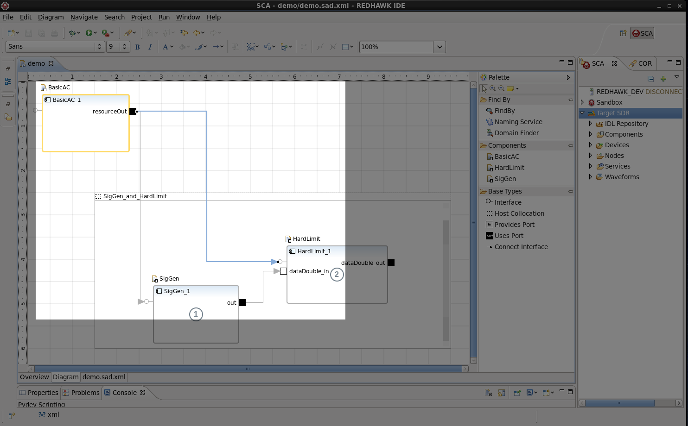

Chapter 11
The Runtime Environment In Depth
11.1 Introduction
The REDHAWK runtime environment consists of the classes and objects that allow for a REDHAWK Application to be executed. It controls the creation and initialization of the resources necessary to deploy a group of Components in order to accomplish a given task. Upon completion, it is in control of the destruction of these resources in order to restore the system to the same state that it was in prior to the Components launching.
In order to accomplish this, the REDHAWK runtime environment contains a group of programs that control various aspects of the environment. The main two that are responsible for maintaining the runtime environment are the Domain Manager and the Device Manager. Both of these programs are executed from the nodeBooter command which serves as launching point. nodeBooter parses user usage options through command line arguments and determines system properties that are used to populate arguments for the Device Manager and Domain Manager. nodeBooter is then able to fork off a process for either the Device Manager, the Domain Manager or both. Within a given Domain, only one Domain Manager instance can run at a time, while multiple different Device Manager instances (Nodes) can be running at once.
11.2 The Domain Manager
The Domain Manager interface is in charge of the control and configuration of the entire systems Domain.
Its primary responsibilities can be grouped into three main categories:
- Registration
- Core Framework administration
- Human Computer Interfacing
Each Domain has a single Domain Manager that keeps track of a File Manager, a set of Device Managers, and a set of Application Factories. The Domain Manger maintains information on all aspects of the Waveform’s implementations contained within its system.
The Domain Manager is configured from the DMD XML file that is located at $SDRROOT/dom/Domain. This file contains the Domain’s name, an ID and a description of the Domain.
11.2.1 Launching a Domain Manager from the command line
11.2.2 Registration
The Domain Manager is able to maintain information about all working parts and interactions in the environment through registration. It can be thought of as the Domain Manager’s responsibility of bookkeeping for the system.
Any time a Device Manager, Device, Service or Application is created within the system, it is registered through the Domain Manager. Likewise, when they are destroyed, they are unregistered from the Domain Manager. These tasks are handled through a serious of register() and unregister() functions for each of the different modules that the Domain Manager is responsible for supporting.
11.2.3 Core Framework Administration
The Domain Manager has Core Framework administrative duties that are required to provide interface access to its registered items. The API of the Device Managers, Application Factories, Applications, and the File Manager that are registered in the Domain are made available to be accessed from an external piece of software.
This is made available so that changes can be made from outside of the running Domain. A Python module is distributed with REDHAWK that allows for simple interfacing with a running Domain. This allows for runtime inspection and tweaking of the environment. For more on this, refer to Chapter 13.
11.2.4 Human Computer Interfacing
The Domain Manager is also responsible for providing functionality that allows for simple interaction between the user and the system, granting the user control over the running Domain. Functionality exists that provide the ability to configure the Domain, get its current Device, Service and Application capabilities and launch maintenance functions.
Capabilities are managed through a series of data structure sequences. Lists are maintained for all Services, Device Managers and Devices that have been registered with the Domain. Each entry in the list contains name and identification information as well as a reference to the object that has been registered. For any Application that has been installed, a reference to its Application Factory is stored in a list along with its name and identification information. Once the Application has started, its reference, along with all relevant identification, Component, connection and ordering information is stored for later retrieval.
11.2.5 Persistence Store
A unique feature of the Domain Manager is the ability to recover from catastrophic failures through Domain Persistence. In order to make use of Persistence, a compile-time option must be specified. Ensure that the Core Framework has been compiled from source and that ./configure was ran with --enable-persistence=persist_type (Section E.2).
With this feature enabled, all bookkeeping data structures that are used to maintain information about Services, Devices, Device Managers, Applications and Application Factories are written to a database whenever any change is made to them. This database file needs to be specified upon launch of the Domain Manager with the --dburl <file path> argument:
Then, upon failure of the Domain Manager, all IDs and references to objects within it Domain are stored. Since these objects themselves are actually separate processes, the Domain Manager can be relaunched with the same arguments, and it is restored to the previous state. When the Domain Manager gets launched, it calls the restoreState() function with a file path string as an argument. It then opens the given database file and attempts to parse out any stored information in order to reconnect those processes with the Domain. Once this is finished, the Domain is rebuilt to the state it was in before it died.
11.3 File System
The File System interface defines CORBA operations that exists to provide a runtime abstraction of an OSs real file system. It gives REDHAWK the ability to have a single interface for reading and writing individual files within a file system regardless of the underlying implementation in the OS.
Files that are stored on the File System may be either plain files or directories.
Characters and symbols that are valid in directories and file names consist of:
- Upper and lowercase letters
- Numbers
- “_” (underscore)
- “-” (hyphen)
- “.” (period)
- The file names “.” and “..” are invalid in the context of a File System.
Path names are structured according to the Portable Operating System Interface (POSIX) specification where the “/” (forward slash) is a valid character that acts as the separator between directories.
Additionally, the File System interface provides implementation of many standard functions such as:
- remove()
- copy()
- exists()
- list()
- create()
- open()
- mkdir()
- rmdir()
- query()
File System attached to the Domain Manager mounts with $SDRROOT/dom as the root. Each Device Manager mounts a File System with $SDRROOT/dev as the root.
11.3.1 File Manager
The File Manager exists to manage multiple distributed file systems. This interface allows these file systems to act as a single entity, though they may span multiple physical file systems on different pieces of hardware. This provides for a distributed file system that functions as a single file system across multiple Device Managers and the Domain Manager.
The File Manager inherits the IDL interface of a File System. It then delegates tasks from the Core Framework based off of the path names to the correct mounted File System, depending on where that File System is mounted. It is also responsible for copying the appropriate Component files into the specific Device Manager’s File System as Applications are installed and launched.
11.4 Applications
Applications are software objects representing Waveforms. They are used to organize a group of Components that are linked together to accomplish a useful computational task. Applications provide a convenient way to move data around in order to achieve these different tasks by allowing for Components to easily be interchanged.
11.4.1 Application Class
Each Application contains a unique Application name and profile, which describes the Application’s configuration. This profile is a SAD file that is referenced by a File Manager.
An Application object is responsible for providing control, configuration, and status of any Application that is instantiated in the Domain. In order to accomplish this, each Application object maintains various data structures to monitor all aspects of its execution.
A list of SPD implementation IDs and a list of Process Identifiers (PIDs) are kept for each Component that makes up the Application in order to manage their life cycles. Since every Component has to be associated with at least one Device, each Component is also stored in a list with the Device that it uses, is loaded on or is executed on.
Upon completion, the Application’s releaseObject() function is responsible for various clean up tasks. Any task or process allocated on Executable Devices are stopped using the terminate() function. All memory allocated by Component instances on Loadable Devices is freed using the unload() function. Finally, any additional capacities or resources that were allocated during creation are released using the Device’s deallocateCapacity() method. These changes return the Devices to the state they were in before the Application was launched (the state of the Devices may not have changed during Application execution).
All object references to Components that make up the Application are released and all connected Ports are disconnected. Any consumers or producers that were connected to a CORBA Event Channel are removed. Finally, all Component’s naming contexts are unbound from the Naming Service.
11.4.2 SAD File
The SAD File is where information about a Waveform’s composition and configuration is stored. It is an XML file that contains tags for all of the elements required for the Application to be built and is located in: $SDRROOT/dev/waveforms/WAVE_NAME. This file is parsed by the runtime environment and used by an Application Factory to construct the desired Waveform.
Individual elements of the file include:
- References to all required Component’s SPD and their locations
- Required connections between the Component’s Ports and interfaces
- External Ports
- Required connections to Devices
- Name given in Naming Service
- Co-Location (deployment) dependencies
- Assembly Controller
- Start order of the Components
Within the SAD file, each Component instantiation has a unique ID, which allows support for multiple instantiations of the same Component. In this situation, each Component would have the same file reference, a unique IDs, as well as a unique name in the Naming Service that is based off of the Component’s usage name. For multiple instantiations of the same Component, the trailing digit on the usage name is simply incremented.
11.4.3 Assembly Controller and Start Order
Each Waveform has only one Assembly Controller that serves as the starting point for the Application. The Component that is marked as the Assembly Controller is responsible for delegating implementations of the inherited CF::Resource functions that include:
- start()
- stop()
- configure()
- query()
By default, the first Component added to a Waveform is the Assembly Controller. However, the Assembly Controller can be changed to any Component in the Waveform by right-clicking on the Component in the Waveform diagram and selecting Assign Assembly Controller.
In the Waveform diagram, the number in the center of the Component indicates the Component’s designated start order. This is the order that the start() function is called on the Components within the Waveform.
The Assembly Controller is always started first.
To modify the start order:
- In the Waveform diagram, right-click the Component for which you want to change the start order.
- Select Start Order.
- Select either Move Earlier or Move Later to change when the Component gets
started.
11.4.4 Host Collocation
To address varying performance considerations, some application designs may require multiple Components be deployed on the same piece of hardware. To meet this type of requirement, in the sad.xml file, you can specify that a set of Components be collocated on a single host at runtime.
To collocate Components in the IDE:
- From the Base Types Palette, select Host Collocation.
- Create a Collocated area by clicking and dragging the mouse.
- Give the collocated area a name.
- Add desired Components to the collocated area.
- Finalize other Component connections.

Figure 11.6: Finalize other Component connections
11.4.5 External Ports
Within the REDHAWK Framework, a particular Component’s Port can be designated as an external Port so that it is accessible to external Waveform objects. Using external Ports, a complex Waveform may be subdivided into smaller more manageable Waveforms. Marking a Port as external adds an external Ports tag in the SAD XML file containing the Component instance that owns the Port in question. Additionally, the color of the Port’s block in the diagram changes color to mark it as externally accessible. For information about marking a Port as external, refer to Section 19.4.2.3.
External Ports can be renamed in the Overview tab of the Application’s SAD file. Renaming a Port enables other Applications to access the Port with a different name instance than the one specified in the Components SCD file, thus preventing naming collision. For information about renaming an external Port, refer to Section 19.4.2.1.
11.4.6 External Properties
Individual Component Properties can be promoted as external in the Properties tab of the Application’s SAD file, which enables other Applications to access these internal Property values through configure() and query(). To prevent naming collision, the Property ID can also be assigned an external ID. If no external ID is specified, the internal Property ID from the Components PRF file is used as its external ID. For information about making a Property external, refer to Section 19.4.2.2.
11.4.7 usesdevice Relationship
An Application may require that specific Devices are running in order for the Application to be deployed. The usesdevice relationship is a mechanism for expressing such a requirement. The usesdevice relationship also enables the Application to connect Ports of Components within the SAD file to Ports of Devices running in a Node. These specifications are handled through tags in the Application’s SAD XML, which can contain any number of usesdevice relationships. Each usesdevice relationship has a unique ID with a set of allocation Property dependencies required for the relationship to be satisfied. (For more information about allocation Properties, refer to Section 8.3.2).
The following example XML expresses the usesdevice relationship and must reside within the softwareassembly element of the SAD XML file. The usesdevicedependencies element must be the last element within the softwareassembly element.
In the above example, there are two usesdevice dependencies with IDs of uses_device_1 and uses_device_2. The first requires a Property with an ID of os that matches the value of linux. The second requires a struct with an ID of struct_alloc_prop with members long_capacity and float_capacity that have the necessary available capacity specified in the value tag.
Once these dependencies have been declared, Port connections can be made in the connections section of the SAD XML file. The following example makes two connections. The first connection is from the Port: output_port of Component_1 to the Port: input_port of the Device that satisfies the uses_device_1 relationship. The second is from the Port: output_port of the Device that satisfies the uses_device_2 relationship to the Port: input_port of Component_2.
11.5 The Application Factory
The Application Factory is responsible for the creation of Applications within a Domain. Whenever an Application is installed by the Domain Manager, an Application Factory is created from tags in the Application’s SAD file, in order to deploy Components of the Application to Devices based on their implementation dependencies.
When the create() function is called, the Application Factory uses the SPD implementation element to locate Devices that are capable of loading and executing the given Component. The Application Factory does this by first assembling a list of all of the allocation Properties required by the Components that make up its Application. It then searches through each of the candidate Devices for Properties whose kindtype is allocation and action is not external. It attempts to use that Devices allocateCapacity() function in order to compare the requested capacities with the Devices available resources.
The creation of the Application fails if the Application Factory is unable to deploy all of the Components in compliance with the Components’ dependencies and host-collocation requirements given the available Devices.
Once the resource marshaling has been successfully completed, the File Manager copies the appropriate Component files into the specific Device Manager’s File System and the Application Factory performs the load() and execute() operations in order to launch the Component on its assigned Device. It then continues to initialize, connect and configure the Components. Properties can also be overridden from the componentproperties tags in the Waveform’s SAD file.
11.6 The Device Manager
The Device Manager interface is used to manage a set of logical Devices, Services and a File System. The Device Manager is responsible for parsing the Node’s DCD XML in order to fork processes for all Devices and Services in the Node. Each process gets passed a list of command-line character strings as executable parameters that are Node-specific configuration variables read from the DCD file.
Once a child process has been forked, its reference is added to a pending list in the Device Manager, while the child process is initialized and configured (possibly with overloaded Property values). After that, it registers itself with the Device Manager, moving its reference from the pending list into a registered list. These lists allow the Device Manager to have knowledge of the status of all Devices and Services contained within its Node. Once all children have been launched, instantiated, and configured, the Device Manager connects the Devices as described by the DCD file.
The Device Manager also responds to signals from any of its child processes. Upon exit of a child, the Device Manager cleans up the bookkeeping by removing any references to the process from the pending or registered lists and unbinding its name from the Naming Service.
The Device Manager also has a signal handler for SIGINT, SIGQUIT and SIGTERM that triggers a shutdown of the Node. The Node shutdown process unregisters and calls releaseObject on all Services and Devices, kills off all of the child processes, and unbinds any remaining names, including itself, from the Naming Service.
11.6.1 Launching a Device Manager from the Command Line
To launch a Device from the command line, a Domain Manager must be up and running.
11.6.2 DCD File
The DCD file is an XML file that contains the necessary information to configure a Node, which is a specific instance of a Device Manager, as well as all Devices and Services associated with that Device Manager instance. The DCD file contains information about the Devices and Services associated with a Device Manager, where to look for a Domain Manager, and other configuration information for Devices and Services. The file is named: DeviceManager.dcd.xml and is located at: $SDRROOT/dev/nodes/NODE_NAME.
Information that is covered in this file includes:
- Device Manager name
- Device Manager ID
- References to required Devices SPD files
- References to required Services SPD files
- The Domain Manager’s Naming Service name
- Any required Device connections
11.6.3 Nodes
Nodes are the collection of Devices, Services, and connections associated with a single Device Manager instance. There is always only one Device Manager per Node. Nodes are deployed on a Domain to give the Applications the ability to communicate with the systems hardware. Upon creation of an Application, the Application Factory attempts to place each required Component on a Device that is deployed in a Node.
11.6.4 Devices
In REDHAWK, Devices are specialized Components that perform command and control of hardware. They are proxies that are able to run in the Domain and provide a single point to interact with one or more pieces of physical hardware.
Devices communicate with various pieces of hardware in order to keep track of their capacities. When Waveforms are deployed and the hardware resources are allocated, the Devices keep track of the amount of any specific resource that was used, and what is still currently available. This is a important because it keeps Components from attempting to over-allocate on any one piece of hardware.

REDHAWK Documentation is licensed under a Creative Commons Attribution-ShareAlike 3.0 Unported License.